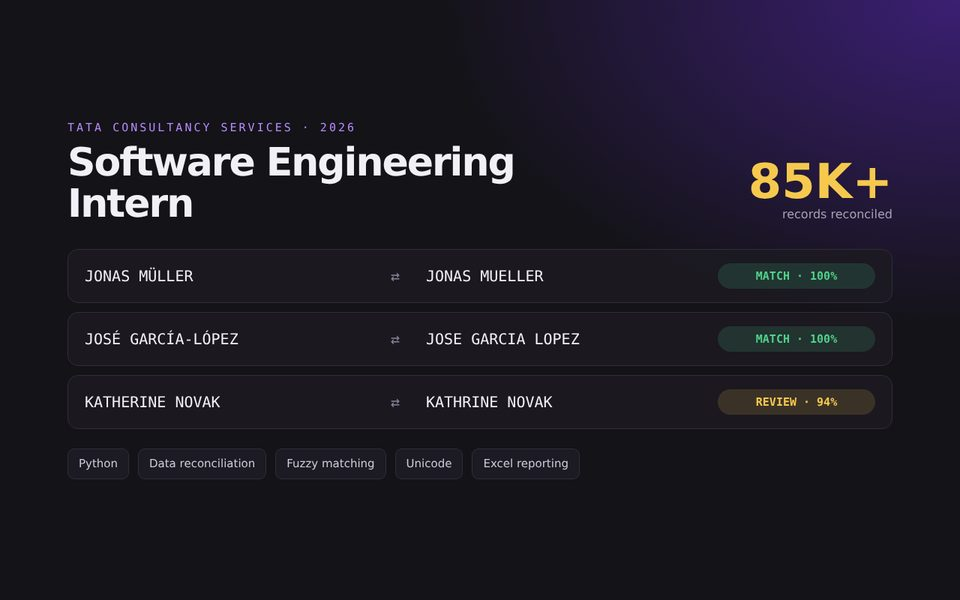

International names
Matched names across umlauts, accents and spelling conventions.
Tata Consultancy Services · Python data reconciliation for a bank's platform migration.

Matched names across umlauts, accents and spelling conventions.
Kept the tool fast as data more than doubled mid-project.
Excel reports with a confidence score on every match.